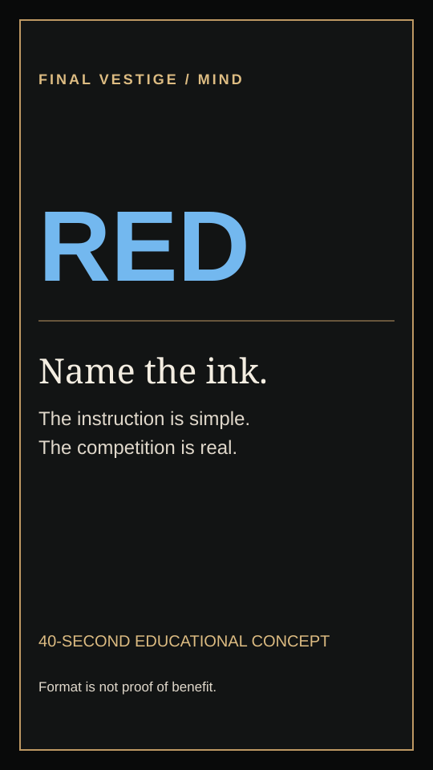

Final Vestige · Tools under review · Unpublished hard hold

00:00–00:07: The word says RED. The ink is blue. Which answer reached you first?
00:07–00:14: In 1935, J. Ridley Stroop measured the effect of competing words on color naming.
00:14–00:21: In one historical task, conflicting words made one hundred color responses take longer.
00:21–00:27: A measured delay is not a diagnosis. It tells us about a particular comparison.
00:27–00:34: Twelve minutes of meditation audio is a session format. It is not evidence of an hour's benefit.
00:34–00:40: Read the sources. Try a free exercise. Decide what fits. Final Vestige.
An independent offer guide, unpublished and not a tested endorsement.
Twelve minutes can feel manageable. If you have tried to sit quietly and found yourself scanning the room, checking a clock, or composing tomorrow's to-do list, a short recording might seem like a welcome structure. You do not need a grand theory of consciousness to appreciate a format that fits a real afternoon. But the thing sold in a recording and the result promised by a recording are not the same thing.
Zen12, marketed by Inspire3, is presented as a course of short audio sessions intended for meditation-style listening. The seller's page speaks directly to familiar frustrations: limited time, restlessness, difficulty quieting a busy mind and uncertainty about how to begin. Those motivations deserve respect. They also deserve more than an advertisement dressed as scientific certainty.
The practical buying question is this: would you genuinely use the advertised files, under the terms actually offered, even without accepting the seller's claim that they replicate the benefits of much longer meditation? This guide examines the format, claimed mechanism, evidence, privacy and alternatives so the answer can be yours.
The Zen12 sales and About pages describe twelve-minute sessions and a progression through twelve levels. At each level, according to the seller, four audio styles are available: relaxation music, guided meditation, sounds of nature and white noise. The files are described as MP3s. These are seller-provided specifications. Final Vestige has not purchased a bundle or inspected its delivered audio, so we do not claim that every file, bonus or advertised support service has been independently verified.
The page advertises three course levels. Beginner covers the first six levels and is described as containing 24 MP3s. Premium covers all twelve and is described as containing 48 MP3s. Advanced covers the last six levels and is described as containing 24 MP3s. The separate public checkout viewed for this review describes the entire twelve-level course and 48 MP3s. Do not assume a tier advertised elsewhere is necessarily what a specific cart has selected for you.
The seller also describes guides, bonus materials, a support channel and a money-back guarantee. Those are representations made by the merchant, not evidence of how a particular customer's refund or support request will turn out. We deliberately do not reproduce prices, discounts or timed checkout promotions because the final terms can vary by page, date and transaction.
The style choices may be the most useful feature to evaluate before spending money. A recorded voice can give someone a clear focus; the same voice may annoy someone else. Music can make a twelve-minute pause more pleasant, while nature sounds or simple silence may be preferable. A good purchase decision starts with what you will actually listen to.
Zen12's actual sales page advertises that one twelve-minute session brings an hour's meditation benefits. It also describes its 'brainwave entrainment' audio as automatically inducing deeper meditative states and a range of favorable cognitive and health outcomes. These are seller claims, not independently established conclusions of this guide.
For an hour-equivalence claim to be scientifically meaningful, we would need to know exactly which benefit is equivalent, for whom, measured how long after a session, against what form of meditation, and under what controlled conditions. Feeling calmer after an audio track is not the same as replicating the measured outcomes of an hour-long practice. The fact that some meditation methods have been studied cannot, on its own, verify a named product's multiplier.
The merchant maintains a Research page discussing entrainment, and related audio-frequency research exists. But evidence about a class of auditory stimuli is not evidence that the specific commercial recording produces all outcomes in its advertising. In 2023, Ingendoh, Posny and Heine reviewed fourteen published studies of binaural beats and EEG oscillations. Five aligned with the entrainment hypothesis, eight contradicted it and one gave mixed results; methodologies varied considerably. They did not test Zen12. Nor can that review alone prove or disprove what any individual user feels while listening.
The safest distinction is among enjoyment, short-term subjective relaxation, measurable cognitive effects, and clinical or health outcomes. They are separate questions. We have not independently verified product-specific evidence adequate to promise a health treatment, automatic brain changes, greater intelligence or one-hour equivalence. None of those outcomes should drive an uncritical purchasing decision.
You can learn something practical about your preferences without subscribing, buying or submitting personal information. On three separate occasions, reserve twelve minutes for a simple routine. First, try quiet sitting with a basic timer. Second, choose a free guided session from a source you independently trust. Third, try neutral ambient sound or nature audio already available to you. If any approach is uncomfortable, skip it.
Before each occasion, jot down what you want the pause to accomplish. Afterward, record whether you found the format pleasant, whether the audio helped you remain engaged or distracted you, and whether you would actually repeat the session. Those notes do not diagnose conditions or establish treatment effects. They help answer the narrower consumer question: do you even prefer this kind of practice?
Someone who finds guided audio useful might reasonably look for a convenient, reusable library. Someone who prefers silence may need no paid product. Both are valid outcomes. The existing Final Vestige Seven Day Focus Fieldbook provides an optional way to reflect on routines through the site's single existing Jetpack list, not a new email form or duplicate funnel. You do not need to subscribe to read this guide.
What exactly arrives? Confirm the selected tier, number of MP3s, delivery route, bonus status and the devices or headphones needed. The public Zen12 catalog and public checkout are not interchangeable promises for every transaction. Keep your order confirmation and inspect the merchant's actual terms.
What is the price? Check the final cart, applicable taxes and payment details immediately before purchase. A marketing timer is not proof that a discount will never return, and this article is not a price guarantee. We do not invent commissions, discounts or an authorized purchase link.
What if I change my mind? The public sales page advertises a money-back guarantee. The offer's exact refund mechanism, scope and execution have not been independently verified by Final Vestige. Read the terms of sale and save a copy before buying; do not rely on the existence of promotional language alone.
How is my data handled? The publicly accessible checkout displays a Cell / Mobile Phone field. Its presence does not establish whether it is mandatory in every transaction. Inspire3's privacy policy says phone numbers may be used for follow-up calls, mobile numbers may be subscribed to marketing SMS, and certain purchaser information may be shared with an affiliate following an affiliate-referred purchase. Those are the company's stated policies; we are not alleging any particular person was called or subscribed. Review the live options and decide what information you are prepared to share. This guide itself collects none of it.
What if I want a clinical outcome? Neither the sales page's confident tone nor this guide constitutes treatment evidence. A practical listening preference does not mean an audio file can treat anxiety, a neurodevelopmental condition, a sleep disorder or another medical problem. We make no medical or wealth promise.
Zen12 could be worth investigating for someone who already wants a library of short, prerecorded meditation-style audio and is comfortable paying for convenience and different formats after inspecting the actual offer. That is a statement about possible product fit, not a first-person review or an expectation of results.
It is a poor basis for a decision if your primary requirement is a medically proven intervention, a guaranteed improvement in concentration, or evidence that twelve minutes replaces an hour of another activity. Free guided practices, a timer and the existing Focus Fieldbook are legitimate alternatives. The most credible review gives you permission to decide that you do not need to buy anything.
Final Vestige's neighboring Stroop investigation describes an attention experiment, not a validation of Zen12. Its precise comparison matters: an observed delay in naming ink colors cannot certify a separate audio product's effects. We keep scientific observations, historical testimony and commercial statements on different shelves.
Commercial relationship and release status: Final Vestige has not personally tested Zen12 and has not verified its own final Inspire3 affiliate acceptance or an authorized product-specific earning link. If a qualifying purchasing link is later approved, Final Vestige may earn a commission at no additional cost to you. There is no active purchasing link in this unpublished guide.
Readers may use the research and free demonstration without supplying an email, clicking an offer, or making a purchase. We would rather have a reader leave with an accurate question than a false certainty.